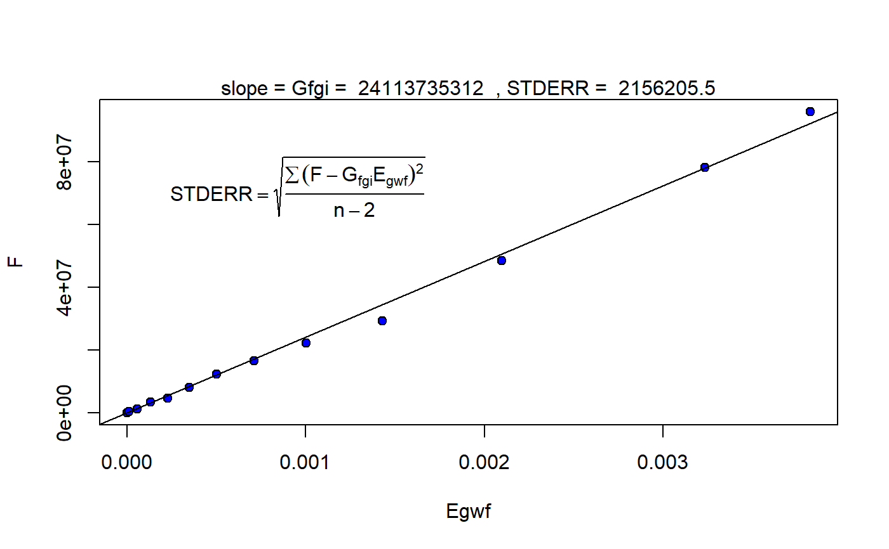
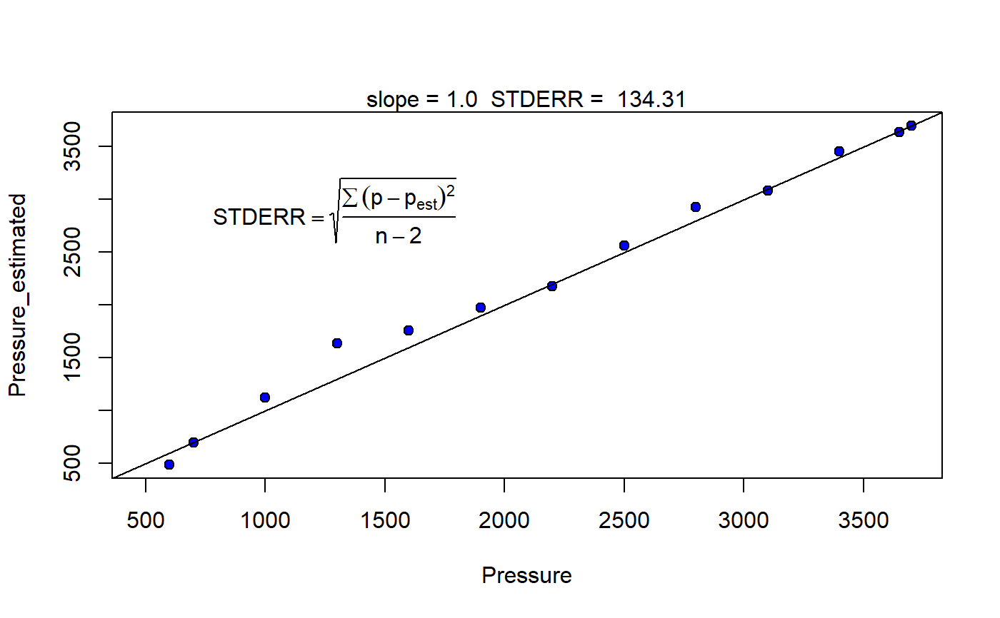
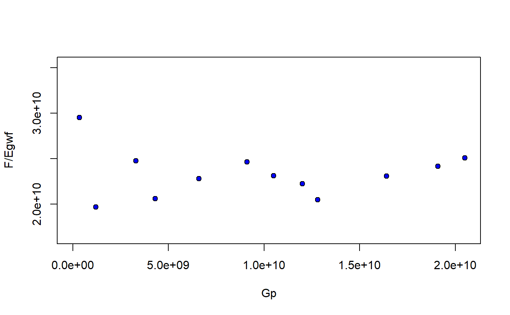

mbal_optim_gas.RdGenerate a list of class 'mbal_gas' with estimates for the unknown parameters of the material balance model according to the class of 'optim_lst' and 'time_lst' objects
mbal_optim_gas(optim_lst, time_lst)
| optim_lst | a list object of class 'optimization_gas' |
|---|---|
| time_lst | a list object of class 'time/date' |
a list of class 'mbal_gas' with estimates for the unknown parameters of the material balance model according to the class of 'optim_lst' and 'time_lst' objects
Walsh MP, Lake LW (2003). A Generalized Approach to Primary Hydrocarbon Recovery, 1st edition. Elsevier Ltd. ISBN 9780444506832, https://www.elsevier.com/books/a-generalized-approach-to-primary-hydrocarbon-recovery-of-petroleum-exploration-and-production/walsh/978-0-444-50683-2.
Walsh MP, Ansah J, Raghavan R (1994). “New, generalized material balance as an equation of a straight line: Part 1- Applications to undersaturated, volumetric reservoirs.” Proceedings of the Permian Basin Oil \& Gas Recovery Conference, 549--564.
Walsh MP, Ansah J, Raghavan R (1994). “New, generalized material balance as an equation of a straight line: part 2- Applications to saturated and non-volumetric reservoirs.” Proceedings of the Permian Basin Oil \& Gas Recovery Conference, 859--865.
Fetkovich MJ, Reese DE, Whitson CH (1998). “Application of a General Material Balance for High-Pressure Gas Reservoirs (includes associated paper 51360).” SPE Journal, 3(01), 3--13. ISSN 1086-055X, doi: 10.2118/22921-PA , https://doi.org/10.2118/22921-PA.
p_pvt <- c(3700, 3650, 3400, 3100, 2800, 2500, 2200, 1900, 1600, 1300, 1000, 700, 600, 400) Bo <- c(10.057, 2.417, 2.192, 1.916, 1.736, 1.617, 1.504, 1.416, 1.326, 1.268, 1.205, 1.149, 1.131, 1.093) Rv <- c(84.11765, 84.11765, 70.5, 56.2, 46.5, 39.5, 33.8, 29.9, 27.3, 25.5, 25.9, 28.3, 29.8, 33.5) / 1e6 Rs <- c(11566, 2378, 2010, 1569, 1272, 1067, 873, 719, 565, 461, 349, 249, 218, 141) Bg <- c(0.87, 0.88, 0.92, 0.99, 1.08, 1.20, 1.35, 1.56, 1.85, 2.28, 2.95, 4.09, 4.68, 6.53) / 1000 cw <- 3e-6 Bwi <- 10.05 Bw <- Bwi * exp(cw * (p_pvt[1] - p_pvt)) muo <- c(0.0612, 0.062, 0.1338, 0.1826, 0.2354, 0.3001, 0.3764, 0.4781, 0.6041, 0.7746, 1.0295, 1.358, 1.855, 2.500) mug <- c(0.0612, 0.062, 0.0554, 0.0436, 0.0368, 0.0308, 0.0261, 0.0222, 0.0191, 0.0166, 0.0148, 0.0135, 0.0125, 0.0115) muw <- rep(0.25, length(p_pvt)) pvt_table <- data.frame(p = p_pvt, Bo = Bo, Rs = Rs, Rv = Rv, Bg = Bg, Bw = Bw, muo = muo, mug = mug, muw = muw) p <- c(3700, 3650, 3400, 3100, 2800, 2500, 2200, 1900, 1600, 1300, 1000, 700, 600) We <- rep(0, length.out = length(p)) Np <- c(0, 28.6, 93, 231, 270, 379, 481, 517.2, 549, 580, 675, 755, 803) *1e3 Gp <- c(0, 0.34, 1.2, 3.3, 4.3, 6.6, 9.1, 10.5, 12, 12.8, 16.4, 19.1, 20.5) * 1e9 Wp <- rep(0, length.out = length(p)) Wi <- rep(0, length.out = length(p)) wf <- rep(1, length.out = length(p)) mbal_optim_gas_lst <- mbal_optim_param_gas(input_unit = "Field", output_unit = "Field", unknown_param = "G", aquifer_model = NULL, phi = 0.1, swi = 0.2, Np = Np, Gp = Gp, Wp = Wp, Wi = Wi, We = We, pd = 3650, p = p, pvt = pvt_table, M = 0, cf = 2e-6, wf = wf, sgrw = 0.15) time_lst <- mbal_time(c(1:length(p)), "year") optim_results <- mbal_optim_gas(mbal_optim_gas_lst, time_lst)#> List of 17 #> $ input_unit : chr "Field" #> $ output_unit: chr "Field" #> $ G : num 2.41e+10 #> $ phi : num 0.1 #> $ swi : num 0.2 #> $ pd : num 3650 #> $ p : num [1:13] 3700 3650 3400 3100 2800 2500 2200 1900 1600 1300 ... #> $ cf : num [1:13] 2e-06 2e-06 2e-06 2e-06 2e-06 2e-06 2e-06 2e-06 2e-06 2e-06 ... #> $ M : num 0 #> $ pvt :'data.frame': 14 obs. of 9 variables: #> ..$ p : num [1:14] 3700 3650 3400 3100 2800 2500 2200 1900 1600 1300 ... #> ..$ Bo : num [1:14] 10.06 2.42 2.19 1.92 1.74 ... #> ..$ Rs : num [1:14] 11566 2378 2010 1569 1272 ... #> ..$ Rv : num [1:14] 8.41e-05 8.41e-05 7.05e-05 5.62e-05 4.65e-05 ... #> ..$ Bg : num [1:14] 0.00087 0.00088 0.00092 0.00099 0.00108 0.0012 0.00135 0.00156 0.00185 0.00228 ... #> ..$ Bw : num [1:14] 10.1 10.1 10.1 10.1 10.1 ... #> ..$ muo: num [1:14] 0.0612 0.062 0.1338 0.1826 0.2354 ... #> ..$ mug: num [1:14] 0.0612 0.062 0.0554 0.0436 0.0368 0.0308 0.0261 0.0222 0.0191 0.0166 ... #> ..$ muw: num [1:14] 0.25 0.25 0.25 0.25 0.25 0.25 0.25 0.25 0.25 0.25 ... #> $ prod :'data.frame': 13 obs. of 3 variables: #> ..$ Np: num [1:13] 0 28600 93000 231000 270000 ... #> ..$ Gp: num [1:13] 0.0 3.4e+08 1.2e+09 3.3e+09 4.3e+09 ... #> ..$ Wp: num [1:13] 0 0 0 0 0 0 0 0 0 0 ... #> $ inj :'data.frame': 13 obs. of 1 variable: #> ..$ Wi: num [1:13] 0 0 0 0 0 0 0 0 0 0 ... #> $ We : num [1:13] 0 0 0 0 0 0 0 0 0 0 ... #> $ aquifer :List of 3 #> ..$ input_unit : chr "Field" #> ..$ output_unit: chr "Field" #> ..$ We : num [1:13] 0 0 0 0 0 0 0 0 0 0 ... #> ..- attr(*, "class")= chr [1:2] "NoA" "aquifer" #> $ wf : num [1:13] 1 1 1 1 1 1 1 1 1 1 ... #> $ sgrw : num 0.15 #> $ p_est : num [1:13] 3700 3638 3459 3087 2928 ... #> - attr(*, "class")= chr [1:2] "volumetric_gas" "mbal_gas"